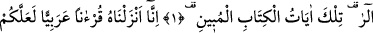
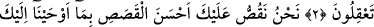
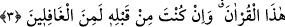

KISSALARIN EN GÜZELİ
Rahman ve Rahîm olan Allah’ın adıyla.
1. Elif Lâm Râ. Bu, apaçık Kitâb’ın âyetleridir.
2. Anlayasınız diye biz onu Arapça bir Kur’an olarak indirdik.
3. (Ey Muhammed) Biz sana bu Kur’an’ı vahyetmekle kıssaların en güzelini
anlatıyoruz. Gerçek şu ki, sen bundan önce (bu haberleri) elbette bilmeyenlerden
idin.
“Elif Lâm Râ” Yani, ‘Ben, Allah’ım; onların bu kıssayı sana sorduklarını görüyor ve
duyuyorum.’ ya da ‘Ben Allah’ım, Yûsuf’un kardeşlerinin ona neler yaptıklarını, nasıl
davrandıklarını biliyorum.’ yahut ‘Ben Allah’ım, yaratılanların gördüklerini de
görmediklerini de görüyorum.’ mânasındadır.
“Elif Lâm Râ” harflerinin meydan okumak maksadıyla sayıldığı da söylenmiştir. Ya
da ‘Bu sûre, Elif Lâm Râ’dır,’ yani bu adla adlandırılmıştır, demektir.
Fakir (Bursevî) der ki: Hurûf-i mukattaa, ehil olmayanlara ifşâ edilmesi haram olan
gizli sırlardandır. Bazı âlimlerin: ‘Bu harfler, Kur’ân’ın müteşâbihlerindendir. Onların
mânâsını ancak Allah bilir.’ şeklindeki sözleri, bu konudaki en sâlim yoldur ve işi
ehline bırakmaktır. Ancak Allah Teâlâ’nın onların mânâsını kâmillerin kalbine akıtması,
O’nun keremi açısından hiç de uzak bir ihtimal değildir. Şu kadar var ki kâmiller,
kendilerinden alınan ahdi muhâfaza etmek ve zayıf akıllılardan sakınmak için bu
mânâların hakîkatlerini açıkça belirtmeksizin remz ve işaret yoluyla anlatırlar.
Cevherin kadrini madem ki cevherci bilir
Öyleyse hırdavatçıyı dükkana niçin korsun?
Hâfız der ki:
Pahalı incinin kıymetini avam ne bilir?
Ey Hâfız, yekpare mücevheri havâstan başkasına verme.
Hz. Ali’nin şöyle dediği rivâyet edilir: “Ebü’l-Kasım (s.a.)’in ağzından